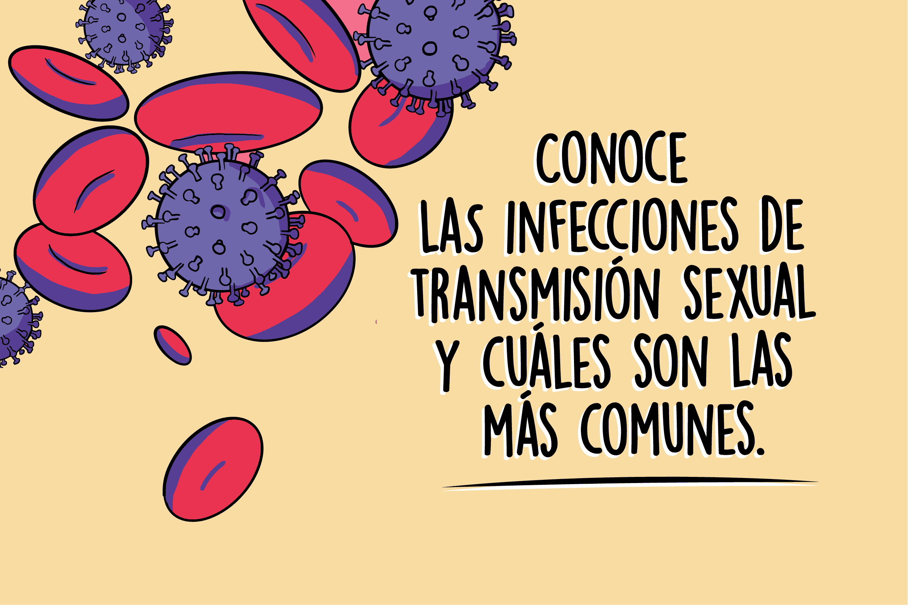
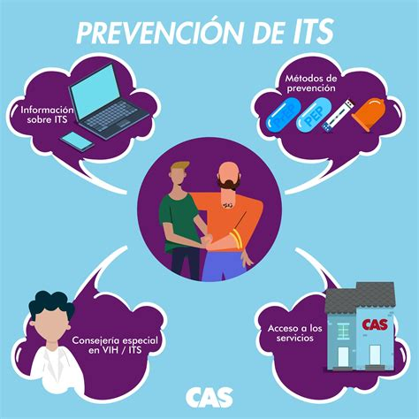

Aunque son muy efectivos, es importante usarlos correctamente para maximizar su protección.
¿Qué son las ITS?
Las infecciones de transmisión sexual (ITS) son enfermedades que se transmiten a través del contacto sexual. Estas incluyen VIH, sífilis, gonorrea, clamidia, entre otras.
¿Cómo prevenir?
- Usar preservativos en todas las relaciones sexuales.
- Realizarse pruebas regulares de ITS.
- Limitar el número de parejas sexuales.
- Evitar compartir agujas u objetos cortantes.
- Recibir vacunación contra virus como el VPH y la hepatitis B.
Recursos
Explora recursos organizados por categoría:
Diagnóstico
Tratamiento
Preguntas frecuentes
Consulta a un médico lo antes posible para realizar pruebas y recibir tratamiento.
Sí, muchas ITS pueden ser asintomáticas. Por eso es vital hacerse pruebas regularmente.
Es importante que tú también te hagas pruebas y sigas las recomendaciones médicas.
Las ITS son comunes en jóvenes sexualmente activos. La educación y prevención son clave.
Creado por
Este sitio web fue creado por María Soledad Ch Ch, con el objetivo de fomentar la prevención de ITS y promover la educación en salud sexual.